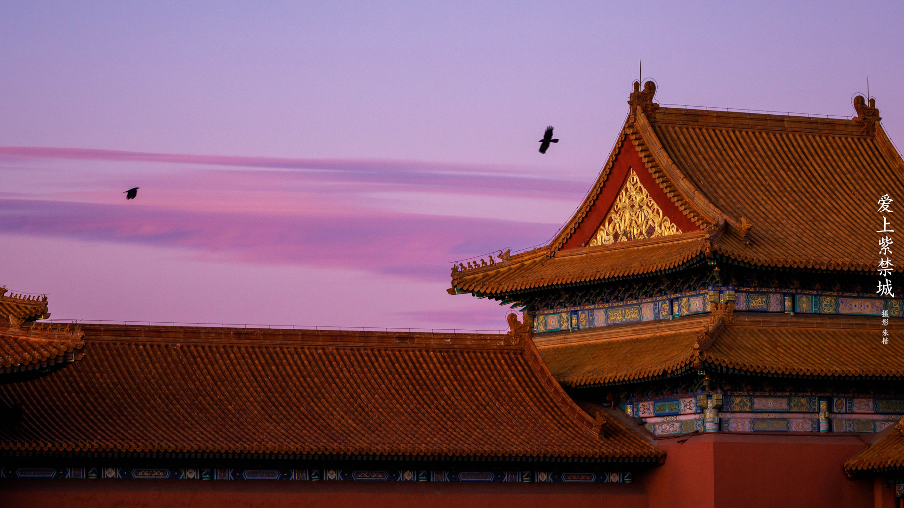
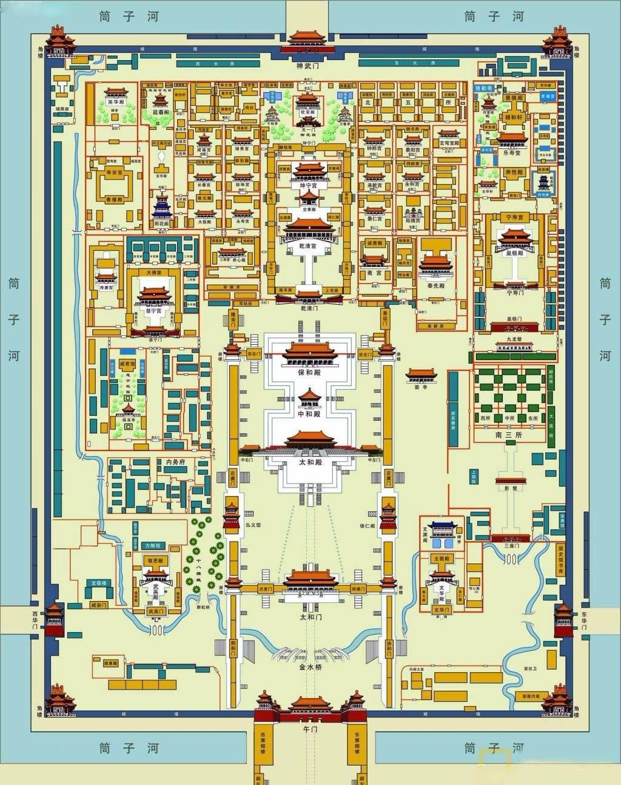
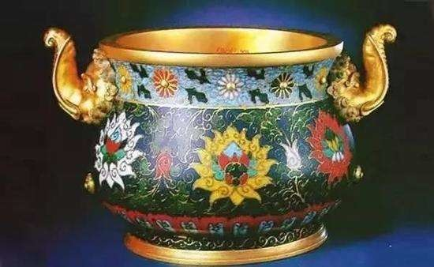
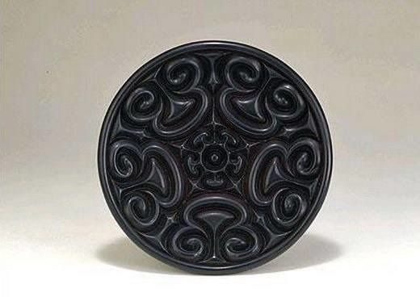
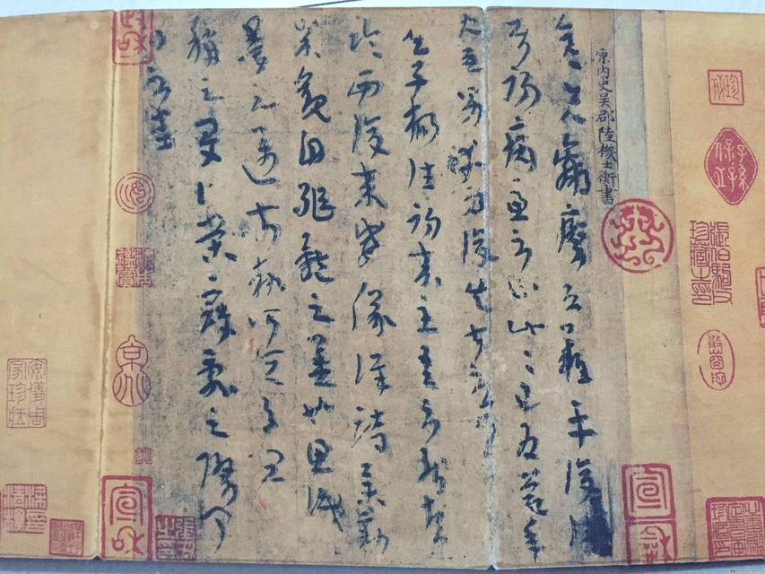

By 七(3) 刘家铄的2022寒假作业
| 序号 | 名称 | 描述 |
|---|---|---|
| No.0 | 目录 | 一张 |
| No.1 | 故宫构造 | 一张 |
| No.2 | 故宫历史 | 一段 |
| No.3 | 故宫藏品 | 一些 |
| No.4 | 其他的事情 | 一些有 |

好中二啊
| 时间 | 事件 |
|---|---|
| 永乐元年（1403年） | (建造过程)北京本来是燕王朱棣的封地。礼部尚书李至刚等奏称，燕京北平是皇帝“龙兴之地”，应当效仿明太祖对凤阳的做法，立为陪都。明成祖于是大力擢升燕京北平府的地位，以北平为北京，改北平府为顺天府，称为“行在”。 |
| 永乐十八年（1420年） | (明朝时期)故宫建成后，明清宫廷五百多年的历史，包含了帝后活动，等级制度、权力斗争、宗教祭祀等。北京宫殿竣工,次年发生大火，前三殿被焚毁。 |
| 崇祯十七年（清顺治元年、大顺永昌元年，1644年） | 李自成军攻陷北京，明朝灭亡，但李自成很快被清军在山海关击败。李自成向陕西撤退前焚毁紫禁城，仅武英殿、建极殿、英华殿、南薰殿、四周角楼和皇极门未焚，其余建筑全部被毁。五月初二，清军进入北京，紫禁城被清军接管。 |
| 宣统三年（1911年）辛亥革命后 | 紫禁城宫殿本应全部收归国有，但按照那时拟定的《清室优待条件》，逊帝爱新觉罗·溥仪被允许“暂居宫禁”，即“后寝”部分。侍卫人等照常留用；王公世爵仍其旧”等条款。 |
| 1949年中华人民共和国成立以后 | 故宫建筑进行了大规模的修缮，同时整理出大量的文物。1961年国务院颁布故宫为全国重点文物保护单位。故宫博物院现存文物150万件（套）。（旧）1987年故宫被联合国教科文组织列为“世界文化遗产”，辟为“故宫博物院”。 |
  